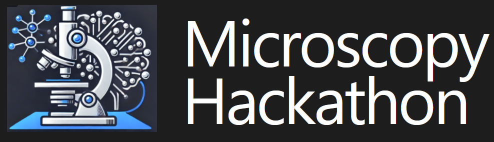

Hackaton: AI and ML for Microscopy
The Machine Learning for Microscopy Hackathon is a hands-on event that brings together researchers, students, and professionals to solve real microscopy problems using AI and data-driven tools. Participants work in small interdisciplinary teams to explore imaging, spectroscopy, and automation challenges, learning from mentors and peers along the way.
Multi-Site Participation
Attend in person or join remotely — teams will collaborate across sites and time zones. Confirmed 2025 host sites include:
| University of Tennessee, Knoxville (UTK) | North Carolina State University (NCSU) |
| Northwestern University (NWU) | University of Illinois at Chicago (UIC) |
| Institut Català de Nanociència i Nanotecnologia (ICN2), Barcelona | University of Toronto |
| University of Wisconsin | University of Colorado Boulder |
| Colorado School of Mines | Indian Institute of Technology Delhi (IITD) |
| Thermo Fisher Scientific - Eindhoven | Online (Global) |